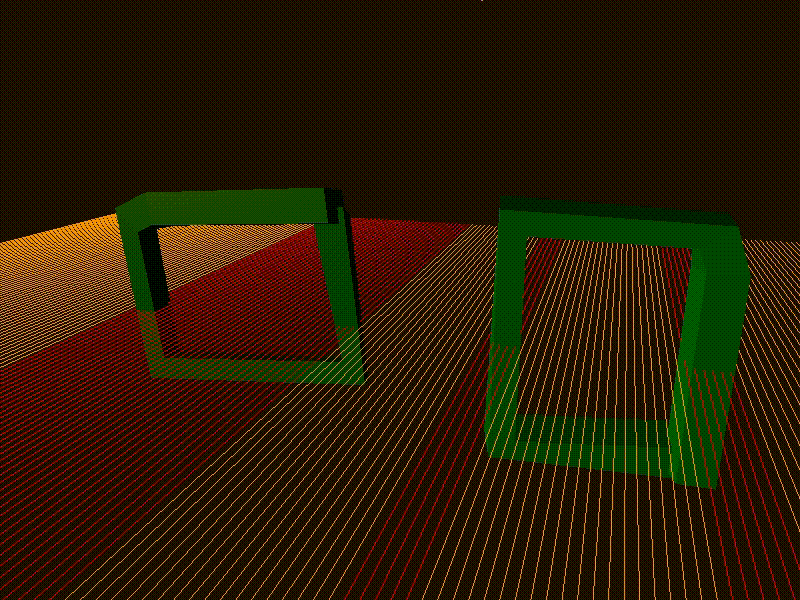
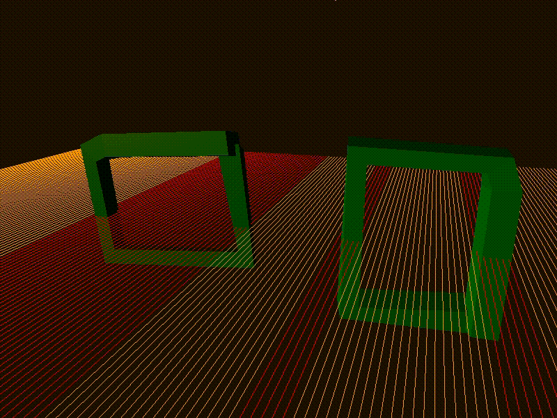
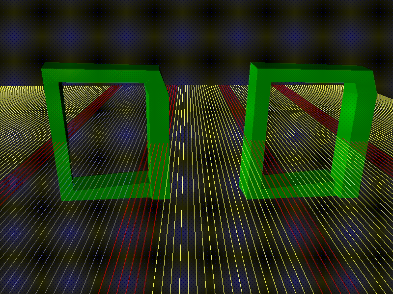

tarzeron
On StaticModel Raycast detect on mesh, how make this on AnimatedModel? Because BoundingBox of Bone too big and not intersect which mesh.

example source code
On StaticModel Raycast detect on mesh, how make this on AnimatedModel? Because BoundingBox of Bone too big and not intersect which mesh.

example source code

Perhaps try a view mask or testing the triangle or type of drawable returned. I don’t really know, I only just started experimenting with raycasts today myself. Sorry I can’t help more.
I solved the problem. After raycast on engine I make additional check, self-make animation for model on CPU and check crossing it with ray. I update repository, can someone it will be interesting.
